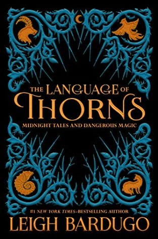
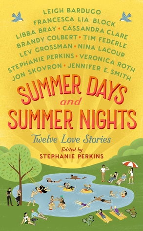
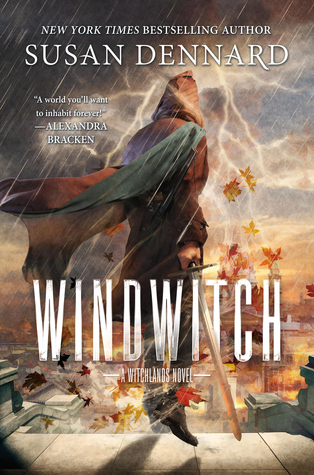
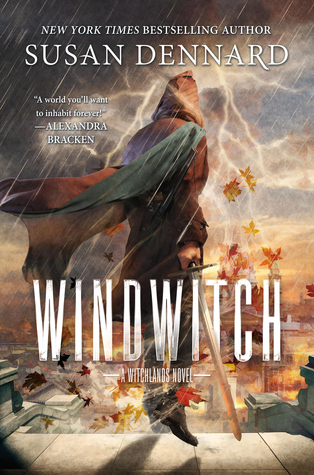
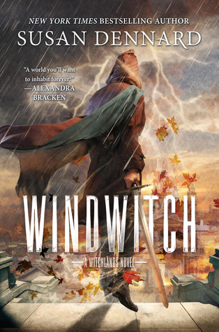
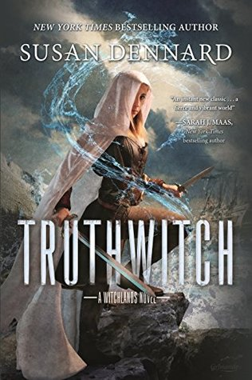
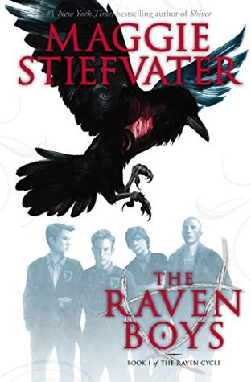
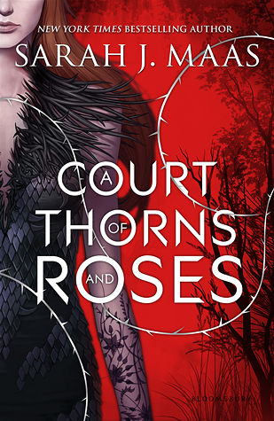

11/15/2017 - 11/20/2017
"The first trap the fox escaped was his mother's jaws."
Depression, loneliness, betrayal and abandonment are strong with these dark short stories, some of which are very loose fairytale retelling (maybe they all were fairytale retellings, but I'm not as well-read in world fairytales as I'd like to be). All of them them play with feeding you common fairytale and folklore themes, motifs, and characters, and them turning each one upside down and adding more depth. So try as I might I only predicted the end of one sort of correctly ("Witch of Duva").
I haven't read a Leigh Bardugo book in a while and forgot how beautiful her prose is.
Read More

 




